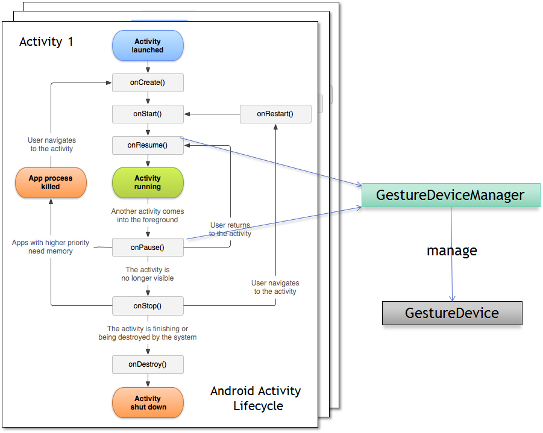

| Snapdragon SDK Reference API |
|
| Snapdragon SDK Reference API |
|
See: Description
| Package | Description |
|---|---|
| com.qualcomm.snapdragon.sdk.gestures |
public class GestureDeviceManager
extends java.lang.Object
The GestureDeviceManager is responsible for communicating with the gesture device as well as providing listeners with event notifications when gesture events have occured. It will invoke the appropriate listeners when an event has occurred.
The API will provide classes that expose Camera Gesture functionality and interface classes for callbacks when a gesture event is dispatched. It will also provide functions to control the optional Gestures Overlay Service GUI. The developer can control which elements will be displayed as well as the option to turn off the overlay entirely.
GestureDeviceManager.isCameraGestureSupported() to verify.
isOverlayServiceAvailable() to verify.
Multiple Gesture Modes are supported by the system, but
only a single gesture mode can be active at any given time. A Gesture Mode
implies a specific approach to interaction with the device. The list and description of supported modes can be found at
GestureMode for detailed information regarding the available Gesture
Modes.
Gesture modes can by changed dynamically at runtime by calling the
setMode(GestureMode)
The default behavior for the SDK is for the system to provide camera frames to the Gesture system.
Multiple activities may use the Camera Gesture SDK.
Each activity must instantiate its own GestureDeviceManager in order to interface with the Camera Gesture SDK.
The gesture device will use the settings of the current foreground activity. These settings include mode, overlay preferences, etc.
For example, Activity 1 has mode set to NEAR_GESTURE and Activity 2 has mode set to
ENGAGEMENT_GESTURE. When Activity 1 is
in the foreground, the mode is NEAR_GESTURE,
and when Activity 2 is in the foreground, the mode is set to
ENGAGEMENT_GESTURE.
Only one activity can be in the foreground at any time.
Resource management will be handled by GestureDeviceManager. This means that an Activity does not need to notify the GestureDeviceManager on state changes. The GestureDeviceManager is responsible for restoring the state it needs for its application to receive the correct events. (i.e. it will have to restore any modes, etc. every time the Activity lifecycle is onResume()). On the onResume() state, the gesture device starts automatically. On the onPause() state, the gesture device stops automatically. The GestureDevice is the interface to the Gesture Framework.
The GestureDeviceManager is registered to the calling the lifecycle of the
activity and will open/start and stop/close the GestureDevice in the
appropriate state. The device will open when onResume() and will close at
onPause().

The device may not contain support for the GestureDevice. The developer must
query GestureDeviceManager.isCameraGestureSupported() to check if camera
gestures are enabled and supported. If there is no camera gesture feature
enabled on the device, the function will return false. Invoking any other API
calls will not do anything.
The GestureDeviceManager will also set OverlayPreferences and invoke
the overlay when events are received from the GestureDevice. There may or may
not be an overlay available. If the service is not available, there will be
no visual feedback to the user, but the gesture events will be propagated
normally. The developer can query the availability of the Gesture Overlay
Service by calling isOverlayServiceAvailable()
Development Flow
The following is the application development flow:
GestureDeviceManager.isCameraGestureSupported()
to check if the device has the camera gesture feature enabled.default constructor will default the
mode to GestureMode.OFF (gestures will be disabled).<isOverlayServiceAvailable() to check if Overlay Service
is installed on the device.setMode(GestureMode)setOverlayPreferences(OverlayPreferences)
Usage
The following is a simple sample application. This application is set to use
the GestureMode.ENGAGEMENT_GESTURE mode. The
OverlayPreferences is set to display engagement, left, and right
only.
// The Class EngageAndSwipeTestApp. This application is set to use the
// ENGAGMENT_SWIPE mode. The OverlayPreferences is set to display engagement,
// left, and right only.
public class EngageAndSwipeTestApp extends Activity implements
EngagementListener, SwipeListener {
// The GestureDeviceManager instance.
private GestureDeviceManager mGestureMgr;
public void onCreate(Bundle savedInstanceState) {
super.onCreate(savedInstanceState);
setContentView(R.layout.main);
if (GestureDeviceManager.isCameraGestureSupported() == false) {
// Camera Gestures are not available or enabled on this system.
// No events or visual feedback will be provided.
// Notify the user.
}
...
// if supported:
// create Gesture manager and set the initial mode.
mGestureMgr = new GestureDeviceManager(this,
GestureMode.ENGAGEMENT_GESTURE);
if (mGestureMgr.isOverlayServiceAvailable() == false) {
// No default overlay service is installed on the system.
// Handle visual feedback to the user if necessary.
}
// setup the overlay preferences
mGestureMgr.setOverlayPreferences(new OverlayPreferences(true,
OverlayPreferences.LEFT | OverlayPreferences.RIGHT
| OverlayPreferences.ENGAGEMENT));
// Set the SwipeListener and Engagement Listener
mGestureMgr.setSwipeListener(this);
mGestureMgr.setEngagementListener(this);
}
//
// The following are some of the event handlers.
//
public void onLeftSwipe(SwipeEvent e) {
// Handle the event.
}
public void onRightSwipe(SwipeEvent e) {
// Handle the event.
}
public void onUpSwipe(SwipeEvent e) {
// Handle the event.
}
public void onDownSwipe(SwipeEvent e) {
// Handle the event.
}
public void onEngagementChanged(EngagementEvent e) {
// Handle the event.
}
}